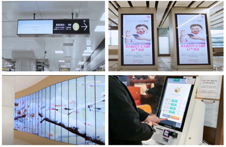

비접촉으로 생체신호를 읽다
카메라 한 대만으로 맥박을 잴 수 있다는 것을, 처음 알았을 때의 묘한 감각을 기억한다. 손목에 무엇도 채우지 않고, 피부에 닿는 것 없이, 화면 앞에 잠시 서 있기만 하면 된다. 그 작은 마법을 현장에서 작동하게 만들려던 시간들의 기록이다.

맥박은 피부 위에 색으로 떠오른다
혈액은 빛을 흡수한다. 특히 헤모글로빈은 녹색 파장의 빛을 잘 빨아들인다. 심장이 한 번 박동하면 혈액이 모세혈관으로 밀려들고, 그 순간 피부는 아주 조금 더 많은 빛을 흡수한다. 다시 혈액이 빠지면 흡수량은 줄어든다. 그래서 피부의 밝기는 심장의 리듬을 따라 미세하게 오르내린다. 사람의 눈으로는 결코 알아챌 수 없는, 수십 분의 일 수준의 변화다. 그러나 카메라의 센서는 그 떨림을 숫자로 붙잡을 수 있다.
광용적맥파, 즉 PPG는 본래 손가락 끝에 집게처럼 끼우는 산소포화도 측정기에서 익숙한 원리다. 거기서는 LED와 광센서가 피부를 사이에 두고 빛의 투과·반사량을 잰다. 우리가 한 일은 그 측정에서 ‘접촉’을 들어낸 것이다. 전용 센서 대신 평범한 카메라로, 피부에 닿는 대신 얼굴 영역의 픽셀 값이 시간에 따라 어떻게 변하는지를 추적했다. 얼굴에서 피부가 잘 드러난 영역(이마, 뺨)을 골라 평균 색상을 프레임마다 기록하면, 그 신호 안에 심박의 주기가 숨어 있다. 잡음에 묻힌 그 주기를 신호처리로 끄집어내면, 손목에 아무것도 채우지 않고도 맥박 수가 떠오른다.
왜 굳이 비접촉이어야 하는가. 첫째는 위생이다. 여러 사람이 오가는 공공 공간에서 같은 센서를 돌려 쓰는 일에는 늘 거부감이 따른다. 닿지 않으면 그 부담이 사라진다. 둘째는 일상성이다. 측정을 위해 무언가를 ‘착용’하는 순간 그것은 의료 행위가 되지만, 거울 앞에서 양치를 하는 30초 동안 맥박이 슬그머니 읽힌다면 그것은 생활의 일부가 된다. 셋째는 접근성이다. 기기 조작이 서툰 사람도, 손이 불편한 사람도, 그저 앞에 서 있기만 하면 된다. 측정의 문턱을 낮추는 일은 곧 건강을 살피는 일을 더 많은 사람에게 돌려주는 일이었다.
Chapter 2. 엔지니어링의 현실데모는 똑똑한데 복도의 거울은 멍청한 이유
아이디어가 우아할수록 현실은 가혹하다. 통제된 실험실에서, 좋은 조명 아래, 가만히 앉아 카메라를 응시하는 사람의 맥박을 재는 일은 어렵지 않다. 문제는 그 다음이다. 거울은 복도에 걸린다. 사람은 가만히 있지 않는다. 조명은 형광등이 깜빡이거나 창으로 든 햇빛이 시시각각 바뀐다. 데모에서 또렷하던 신호는 현장에서 잡음 속으로 가라앉는다.
가장 큰 적은 세 가지였다. 움직임, 조명, 그리고 잡음. 사람이 고개를 돌리거나 표정을 바꾸면 얼굴 영역의 밝기가 심박과는 무관하게 크게 출렁인다. 이 변화는 심박 신호보다 진폭이 훨씬 커서, 그대로 두면 진짜 신호를 완전히 덮어버린다. 조명도 마찬가지다. 형광등의 50/60Hz 깜빡임, 지나가는 사람의 그림자, 시간대에 따른 광량 변화가 모두 가짜 주기를 만들어낸다.
측정 중…이라고 솔직히 표시하고 값을 내놓지 않게 했다. 틀린 숫자보다 침묵이 낫다.가장 중요한 설계 결정은 마지막 항목이었다. 비접촉 측정은 태생적으로 항상 잴 수 있는 기술이 아니다. 사람이 움직이는 동안, 빛이 흔들리는 동안에는 신뢰할 수 없다. 그래서 우리는 ‘언제나 숫자를 보여주는 시스템’이 아니라 ‘잴 수 있을 때만 조용히 알려주는 시스템’으로 방향을 틀었다. 신호의 안정성을 스스로 평가해 일정 기준을 넘을 때만 결과를 띄우게 하자, 사용자가 느끼는 신뢰가 비로소 올라갔다. 정확도란 숫자의 오차만이 아니라, 틀릴 때 틀렸다고 말할 줄 아는 정직함이기도 했다.
| 접촉식 측정 | 비접촉(카메라) 측정 | |
|---|---|---|
| 위생 | 공용 시 부담 | 닿지 않아 자유로움 |
| 일상성 | 착용·조작 필요 | 그냥 서 있으면 됨 |
| 정확도 | 안정적·높음 | 조건에 민감 |
| 약점 | 거부감·번거로움 | 움직임·조명에 취약 |
| 적합한 곳 | 임상·정밀 측정 | 생활공간의 상시 모니터링 |
이 표를 정리하면서 분명해진 것은, 비접촉 측정이 접촉식을 ‘대체’하는 기술이 아니라는 점이다. 그것은 다른 자리를 차지한다. 정밀이 필요한 임상은 여전히 접촉식의 몫이다. 비접촉 측정의 진짜 가치는, 지금까지 아무도 재지 않던 순간 — 거울 앞에 선 평범한 아침 30초 — 에 부드럽게 끼어들어 건강의 결을 ‘상시적으로’ 살핀다는 데 있었다.
Chapter 3. 앞에 선 사람을 알아보는 사이니지주의를 요구하지 않고, 먼저 알아채는 화면
같은 단말에는 또 하나의 축이 있었다. 인터랙티브 디지털 사이니지다. 보통의 사이니지는 정해진 콘텐츠를 일방적으로 재생한다. 우리가 만들려던 것은 앞에 선 사람의 맥락을 인식해 스스로 콘텐츠를 바꾸는 화면이었다. 누가, 어떤 상황에서, 얼마나 가까이 서 있는지 — 그 맥락(context)에 따라 무엇을 보여줄지 달라진다. 멀리 있는 사람에게는 큰 글씨의 환기성 화면을, 가까이 다가온 사람에게는 상세한 인터랙션을 내미는 식이다.
여기서 머신러닝은 두 곳에서 일했다. 하나는 맥락 인식 추천 — 어떤 맥락에 어떤 콘텐츠가 잘 반응하는지를 누적된 데이터로부터 학습해, 다음에 비슷한 맥락이 오면 더 적절한 것을 고른다. 다른 하나는 스마트 콘텐츠 관리 — 수많은 콘텐츠가 언제·어디서 잘 작동했는지를 모델이 정리해, 운영자가 일일이 편성하지 않아도 적합한 배치를 제안하게 했다. 사이니지가 단순한 ‘재생기’에서 ‘판단하는 화면’으로 바뀌는 지점이었다.
기술적으로 가장 까다로웠던 것은 이종(異種) 기기로 구성한 듀얼 스크린 사이니지였다. 성능과 특성이 서로 다른 두 기기 — 이를테면 가벼운 임베디드 기기와 성능이 높은 디스플레이 — 를 하나의 콘텐츠 경험으로 묶는 일이다. 한 화면이 맥락을 감지하고 다른 화면이 풍부한 콘텐츠를 띄우되, 둘은 끊김 없이 호흡을 맞춰야 했다. 서로 다른 운영 체계와 처리 속도를 가진 기기를 시간적으로 동기화하고 역할을 나누는 이 구조는 등록 특허로 정리되었다. 특허 그 자체보다 의미 있던 것은, 값싼 기기와 비싼 기기를 섞어 쓰면서도 하나처럼 보이게 만드는 — 즉 현실의 예산과 이상의 경험 사이를 잇는 — 설계 사고였다.
컴퓨팅을 조용하고 인간적인 것으로
맥박을 읽는 거울과, 사람을 알아보는 사이니지. 표면적으로는 다른 프로젝트처럼 보이지만, 둘을 꿰는 실은 하나였다. 주의를 요구하지 않는 컴퓨팅이다. 좋은 기술은 사용자에게 “나를 봐, 나를 조작해”라고 외치지 않는다. 거울 앞에 서면 맥박이 슬그머니 읽히고, 화면 앞에 다가서면 알맞은 내용이 먼저 떠오른다. 사람은 평소처럼 살아가고, 기술은 배경에서 감지하고 반응한다.
이것을 흔히 ‘앰비언트 컴퓨팅(ambient computing)’이라 부른다. 계산이 특정 기기 안에 갇혀 사용자의 명령을 기다리는 대신, 환경 속에 스며들어 맥락을 읽고 조용히 거든다는 발상이다. 비접촉 측정과 맥락 인식 사이니지는 같은 철학의 두 얼굴이었다. 전자는 ‘닿지 않고 감지’하고, 후자는 ‘요구하지 않고 반응’한다. 둘 다 사람에게서 부담을 덜어내려는 시도였다.
다만 이 방향에는 윤리적 책임이 따라온다. 감지하는 기술은 곧 지켜보는 기술이기도 하다. 그래서 우리는 처음부터 원칙을 세웠다. 영상 자체는 저장하지 않고 측정에 필요한 신호만 즉시 추출해 버린다. 추천은 한 사람을 ‘식별’하기보다 ‘맥락’을 읽는 데 그친다. 조용한 컴퓨팅이 감시가 되지 않으려면, 무엇을 감지하지 ‘않을’지를 먼저 설계해야 했다.
맺음말데모가 아니라 현장을 위해 짓는다는 것
이 프로젝트가 내게 남긴 가장 큰 교훈은 기술적이라기보다 태도에 가깝다. 실험실의 데모와 복도의 거울은 같은 코드를 공유하면서도 전혀 다른 존재다. 데모는 가장 좋은 조건에서 ‘된다’를 보여주면 되지만, 현장은 가장 나쁜 조건에서 ‘무너지지 않는다’를 증명해야 한다. 그 사이의 거리는 알고리즘의 정교함이 아니라, 실패를 어떻게 다루느냐로 메워진다.
비접촉 측정에서 우리가 끝내 자랑스러워한 것은 정확도 숫자가 아니라, 신뢰할 수 없을 때 조용히 입을 다무는 정직함이었다. 사이니지에서 의미 있던 것은 화려한 인터랙션이 아니라, 값싼 기기와 비싼 기기를 섞어 현실의 제약 안에서 하나의 경험을 만든 설계였다. 현장을 위해 짓는다는 것은, 이상을 낮추는 일이 아니라 이상을 현실의 잡음 속에서도 견디게 다듬는 일이었다. 화면 앞에 잠시 멈춰 선 누군가가, 자신이 무엇과 마주하고 있는지조차 의식하지 못한 채 조용히 도움을 받았다면 — 그것으로 이 작업은 제 몫을 다한 것이라 믿는다.
참고
- D. Park et al., “비접촉 광용적맥파(PPG) 기반 스마트 미러를 이용한 개인 건강 모니터링,” 실감형 콘텐츠 단말 관련 연구, 2020년대.
- D. Park et al., “맥락 인식 기반 인터랙티브 디지털 사이니지와 머신러닝을 활용한 스마트 콘텐츠 관리,” 디지털 사이니지 관련 연구.
- 등록 특허, “이종 기기 기반 듀얼 스크린 디지털 사이니지 시스템 및 그 운용 방법.”
- 본문의 수치(주파수 대역, 측정 시간 등)는 원리를 설명하기 위한 일반적 값으로, 구체적 값은 환경·기기·조건에 따라 달라진다.